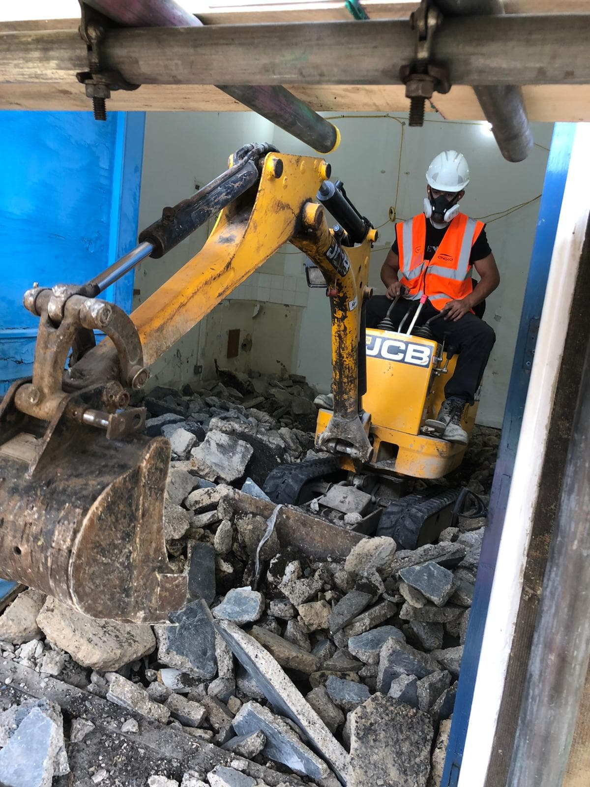
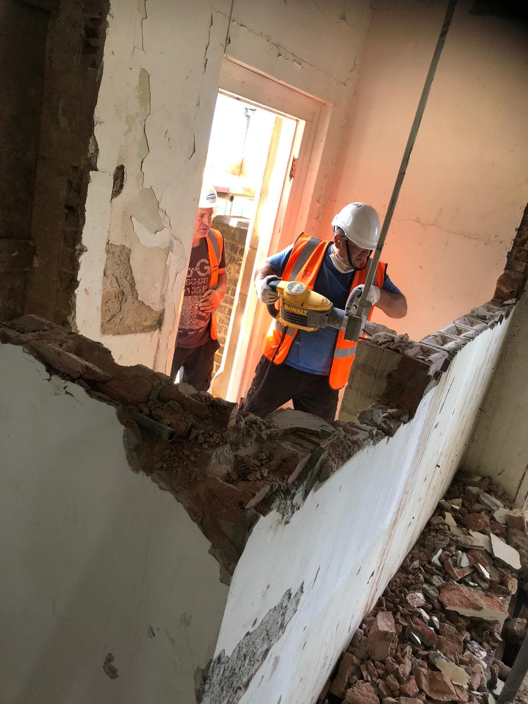
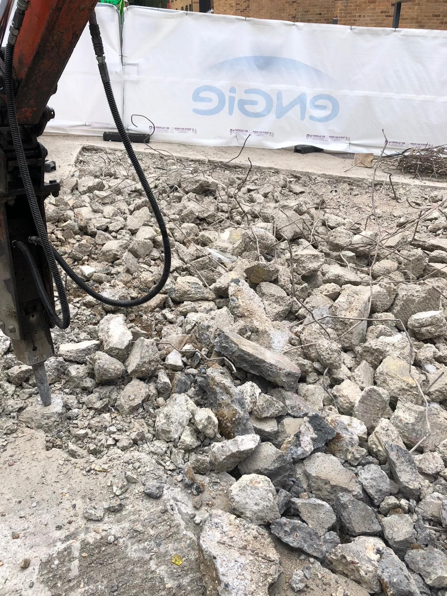
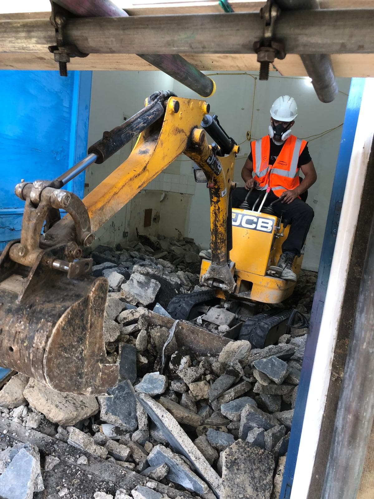
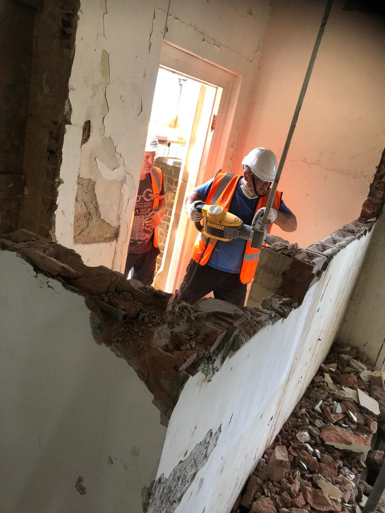
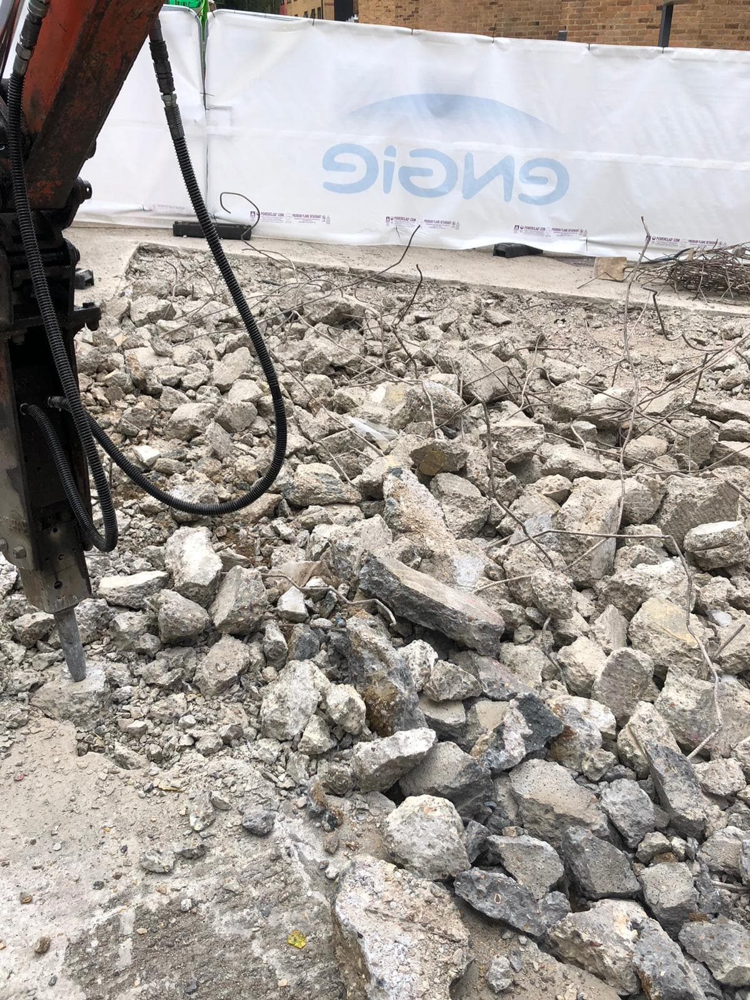

North London Demolition Groundwork undertake Soft-Strip projects throughout the UK including Refurbishment and Demolition projects ranging from small buildings like shop clearances to multi-storey housing, hospitals, schools and office blocks.
Soft Strip is the process of removing all non-structural elements inside and outside of a building to facilitate demolition or refurbishment. Soft Strip works can either be undertaken as a stand-alone project or as part of a package of overall works for a project.
Our Soft Strip projects are carried out by our experienced, competent operatives who are well equipped and knowledgeable on the latest health, safety and environmental practices and asbestos regulations.
No job is too big for our experienced team of CPCS approved operators. Contact us today for a free no obligation quote.

 




